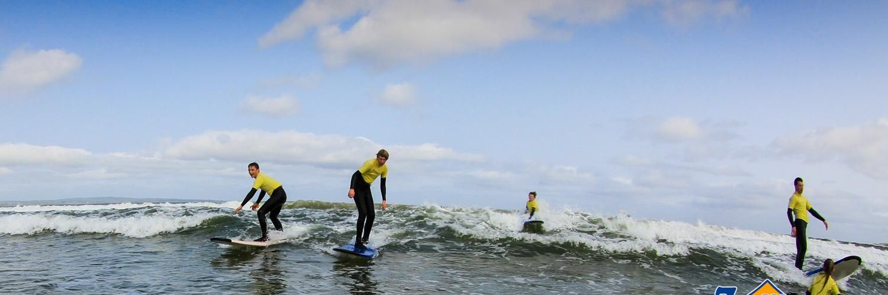

Summer Surf Camps
We offer a fun and thrill-packed week of surfing. Each day's two-hour session will allow your children to gain confidence and skills in the water. Our camps are more than just surf lessons: on the first day, kids have a complete lesson on the beach and then go into the water to catch their first waves. Over the rest of the week they will learn more about ocean safety and surfing, and we will work with them to catch lots of waves and have loads of fun. To finish out a great week, we hold an award ceremony that recognises your child's hard work and celebrates them becoming a surfer. We group participants by age and experience. On arrival for your surf camp in Enniscrone, we will meet you and introduce you to your surf instructors, who will work with your child for the week. After completing a registration form, we will choose a wetsuit and surfboard that suits your child best - we have winter and summer wetsuits to keep them toasty warm during an Irish summer, and on very cool days we can add hoods for extra warmth. Once your child has their wetsuit, we will explain how to put it on and make sure they are comfortable, as this is the wetsuit they will have for the week. When everyone is dressed and ready, the instructors will introduce themselves, everyone gets a board, and we head for the beach as the fun begins. Emphasis in our camps is on fun and safety - we pride ourselves on our child-friendly camps and provide full supervision on land and in water. We have been running our surf camps in Enniscrone for the last 18 years, and kids return to us year after year. If you'd like to hear what they have to say, check out our reviews on TripAdvisor.
View on Google Maps →